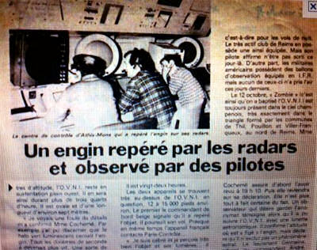

A Livingston (Ecosse), observation d'une lumière brillante en
forme d'étoile qui s'atténue et regagne en brillance répétitivement Mather, Adrian & Jacobs, Bill: "Lothian
X-Files revealed", Scotsman.com News, 2007-08-02.
et A Mezidon-Canon (Calvados), 1
femme observe le passage de 1 lumière blanche traversant le ciel L'enquête montrera que la station MIR était parfaitement visible ces 2 jours à l'heure de l'observation. Une expérience américaine d'avion sans pilote téléguidé par satellite a pu également être visible le 22 août. Compte tenu des observations faites, l'hypothèse de l'observation de la station MIR est retenueSEPRA: PAN
classé A.

Article sur l'observation du 6 Troadec, J.-P.: "'Les
dossiers secrets' de l'Armée de l'Air française", RUP, 2012-03-19
Sur le plateau de Gravelotte (Mozelle)339 m d'altitude, terrain militaire implanté en bordure de la RN 3,
entre les communes de Rozerieulles et Gravelotte, M. FXXXXX
(agent de sécurité habitant Metz) en voiture écoute de la musique et regarde le ciel. Il
observe alors 1 forme lumineuse qui se déplace rapidement dans le sens sud-nord au-dessus du terrain militaire de
Gravelotte. L'observation dure 15 à 20 s. L'enquête auprès des autorités aériennes (radar militaire du Centre de
Détection et de Contrôle de Dachenbrönn) met en évidence le passage d'un avion de ligne ainsi qu'une piste radar non
identifiée à l'heure de l'observation Piste ME 403 suivie pendant 3 mn, sans explication, entre . L'heure de
fin de cette piste correspond à celle de l'observation du témoin. Aucune preuve formelle mais il est probable que
l'observation du témoin soit un aéronef SEPRA: PAN
classé D < FX 95-2562.
A Cintegabelle (Haute Garonne), 1 couple sur sa terrasse
observe le passage lent de 1 sphère lumineuse. A ce moment les témoins rapportent un comportement inhabituel des
animaux et un silence total de la nature. La sphère se déplace silencieusement en lègers zig-zags et disparaît au
bout de 5 mn environ. Un autre témoin dans une ville distante de plusieurs dizaines de km aurait vu ce phénomène,
mais n'a pas été retrouvé SEPRA: PAN
classé C.
Nuit du Entre 130 et 150 témoins dont 1 conducteur de train observent une
forme triangulaire avec 2 feux rouges et 1 feu blanc très lumineux. 1 autre témoin observera également le même
phénomène. Un 3ème témoin indiquera, au vu des articles de presse, que le phénomène observé est un ULM
qui est également passé près de son domicile dans le même créneau horaire. Il sera également aperçu plus au sud un
phénomène similaire L'enquête du SEPRA déterminera le passage d'un Transall à basse altitude dans l'axe des 2 lieux d'observations a été rapporté. Il est donc à peu près certains que les phénomènes observés sont consécutifs au passage de l'un des 2 aéronefs. A noter dans l'un des PV l'enquête différente concernant des traces d'herbes sèchées dues à la présence de murets enterrés. SEPRA: PAN
classé A.Jean-Luc Lemaire enquêtera également sur ce cas. Des jeunes de Sedan le filment pendant 10 s environ Journaux France 3, TF1, C+.Morin, Hervé: "Mystérieux
objet volant au-dessus des Ardennes", Le Monde, 1998-08-16.
Nuit du A Ennezat (Puy-de-Dôme), 1 témoin
aperçoit le passage de 2 grosses lumières blanches suivies d'une lumière rouge (formant un triangle) SEPRA: Cas
classé C.
A Saint Chamond (Loire), plusieurs
membres d'une famille observent 3 points lumineux jaune rouge et vert scintillants dans le ciel Cette observation correspond à l'étoile AntarèsSEPRA: PAN
classé A.
A Charleville-Mézières (Ardennes), 1 témoin observe 1
point lumineux dans le ciel qu'il filme pendant 30 mn environ SEPRA: PAN
classé C.
A Saintes (Charente Maritime), 2 jeunes garçons en vacances
dans un camping observent pendant quelques instants 3 points lumineux scintillant dans le ciel et se déplaçant à
vitesse importante SEPRA: Cas
classé C.
L'équipage d'un DC-10 observe le passage durant environ de 6
points lumineux en formation serrée ayant la forme globale d'une étoile avec une traînée. La trajectoire est
horizontale et les points sont particulièrement lumineux. Le pilote, ancien pilote de chasse et astronome amateur ne
peut s'expliquer ce phénomène qui décrit en 10 s environ un arc de cercle de 90°, ce qui en fonction de la distance,
très difficile à estimer conduit à des vitesses très largement supersoniques. Aucune observation radar n'est venu
corrèler cette observation La description peut faire penser à une rentrée atmosphérique mais l'enquête n'a pas permis de trouver une explicationSEPRA: PAN
classé D.
A Talmont-Saint Hilaire (Vendée), 2 témoins observent
durant 15 s environ 3 points lumineux dans le ciel SEPRA: PAN
classé C.